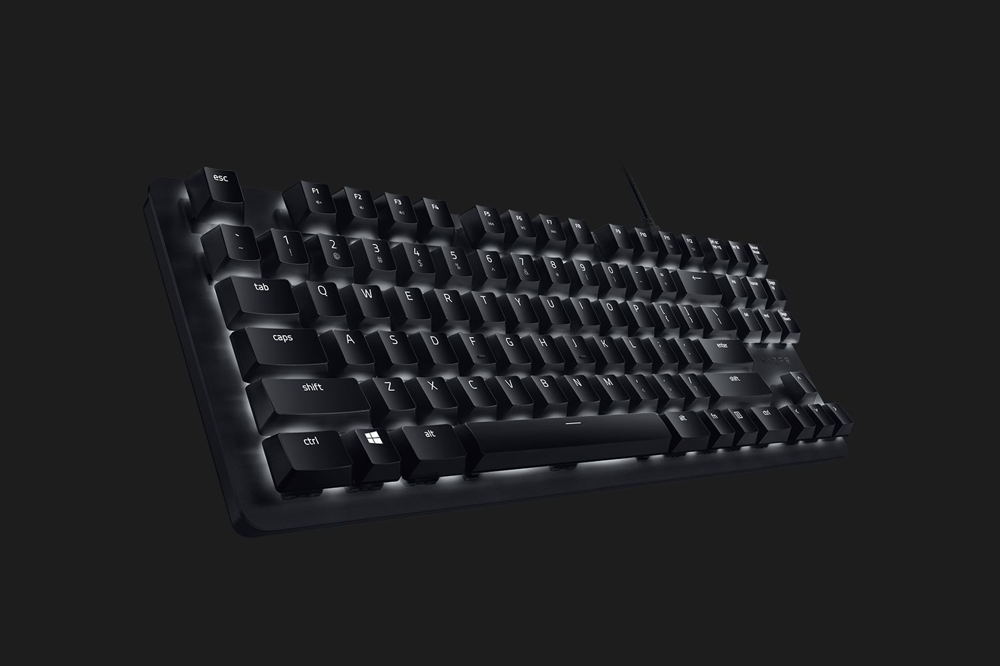
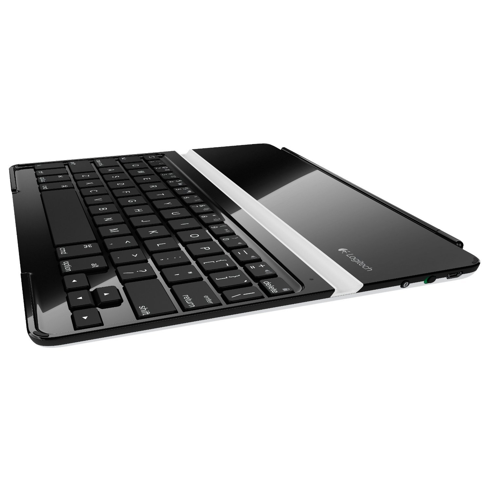
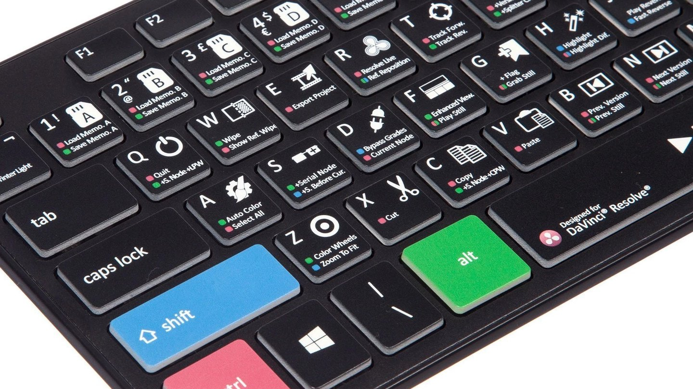
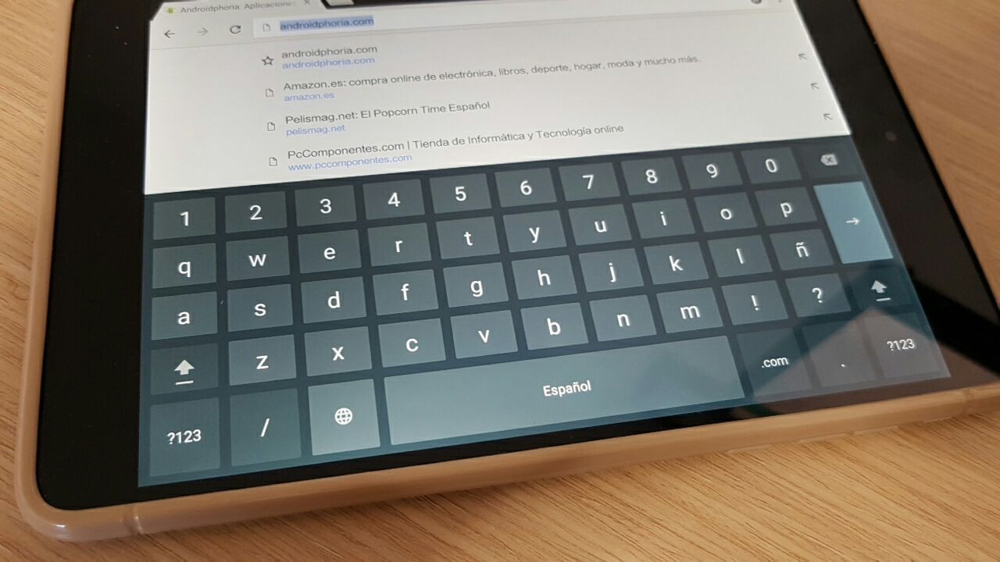

Introducción
En el mundo de la informática existen muchos componentes, unos forman lo que sería el software, y otros, el hardware. En esta página veremos la historia de uno de los componentes creados ya desde el siglo XVII y de los más importantes a la hora de escribir, estoy hablando de los teclados. El siguiente dispositivo se utiliza para la escritura en un ambiente tanto digital como analógico, es decir, los teclados tambien se utilizaban en las máquinas de escribir antiguas.
Curiosidad
La primera máquina de escribir apareció en el siglo XVII.En 1714 Henry Mill registró la primera patente que parecía una máquina de escribir, aunque no se sabía nada al respecto. En 1829 apareció la imprenta, que fue considerada la primera máquina de escribir.
Tipos
Actualmente existen varios tipos de teclados, los mas utilizados son los siguientes:
Teclados de membrana
De todos los que vamos a hablar, estos teclados son los más baratos, los más versátiles y los más utilizados. Los teclados de membrana son teclados que, como su nombre indica, tienen una membrana debajo de cada tecla y todos están unidos entre sí. No hay ningún elemento mecánico en las teclas y las letras suben cuando se presionan gracias a la goma debajo de ellas. Estos son los más comunes porque son los más baratos y vienen en más variedad de modelos.

Teclados mecánicos
Cada interruptor tiene un mecanismo separado para controlar cuándo se presiona el interruptor. Existen diferentes mecanismos que se dirigen a diferentes necesidades y la principal ventaja de los teclados mecánicos es su profesionalidad, ya que cada mecanismo está diseñado para lo que buscas. En general, si compra los teclados adecuados, serán más rápidos y duraderos.
Teclados portátiles
Las tabletas tienen su propio teclado virtual, que está diseñado para ser una adición más conveniente. Por ejemplo, algunas van pegadas a la funda y sirven de plataforma, o algunas son enrollables, también puedes lavarlas o mojarlas sin ningún problema y suelen ser de plástico o silicona y no se estropearán. También hay bolsas plegables, que nos permiten meterlas doblándolas y ocupan muy poco espacio.
Teclados para edición de vídeo
Existen teclados especiales para editores de video, aunque este es solo uno de los muchos teclados específicos que se pueden encontrar en el mercado. No es solo para profesionales, y hay opciones de 100€ o 150€ que se pueden comprar en Amazon.
Teclados para edición de vídeo
El teclado del móvil se ha convertido en uno de los dispositivos más utilizados en la vida diaria para enviar un sinfín de mensajes en WhatsApp. Son teclados similares a los teclados físicos donde tendrás que tocar cada tecla una por una ayudandote de un programa que te autocompleta las palabras, ahorrándote tiempo al escribir.
Funcionamiento
Cada vez que presiones o sueltes una tecla en la PC, se produce la interrupción del hardware, con el vector 9. Hay dos módulos de software responsables de la entrada del teclado, uno de ellos es responsable de la lectura de cerraduras, conversión en ASCII y guardándolo en un bufer de memoria; La otra persona es responsable de revisar el búfer y devuelve su estado siempre que el usuario lo requiera. Además de esta memoria interna, el teclado tiene algunos registros, dos de ellos son accesibles desde el exterior:
Registro de Estado : Contiene información acerca del interface.
Registro de Datos : Si en la memoria interna del teclado hay pulsaciones registradas, en este registro se guarda una copia del scancode correspondiente a la primera que se pulsó.
Ambas rutinas se implementan en la BIOS de computadoras, la primera que funcionan a través de las interfaces de hardware creadas por la interfaz de teclado (INT 9). La segunda es llamada por los programas de usuario mediante la ejecución de la interrupción software int 16h.
Marcas
¿Donde encontrarlos?
Opinion personal
Las tecnologías siguen avanzando en la actualidad, e impresionan lo que pueden llegar a hacer, pero no debemos olvidar el como hemos llegado hasta ella, y pienso que el teclado es uno de los dispositivos que más nos han ayudado en esta travesía, tanto que seguimos utilizandolos. Al menos, asi será, hasta que perfeccionen el texto por voz.
Bibliografía
Los enlaces utilizados en esta página son: AZ adsl zone Wikipedia